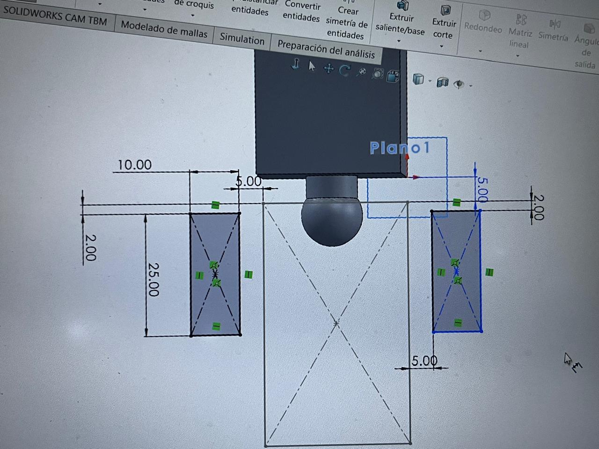
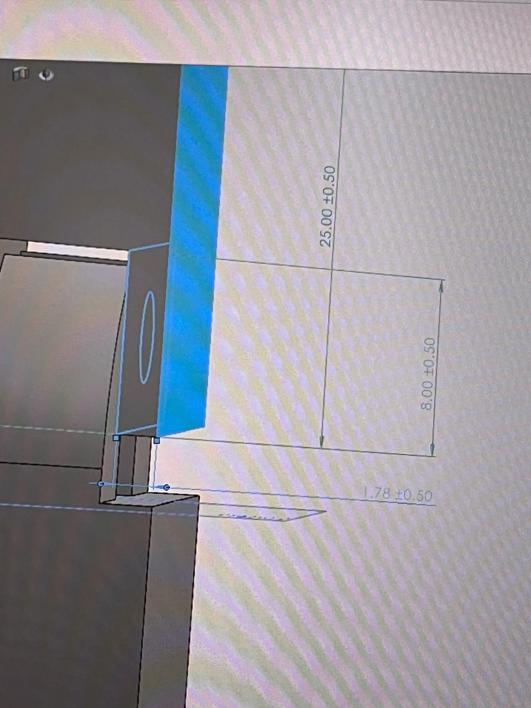
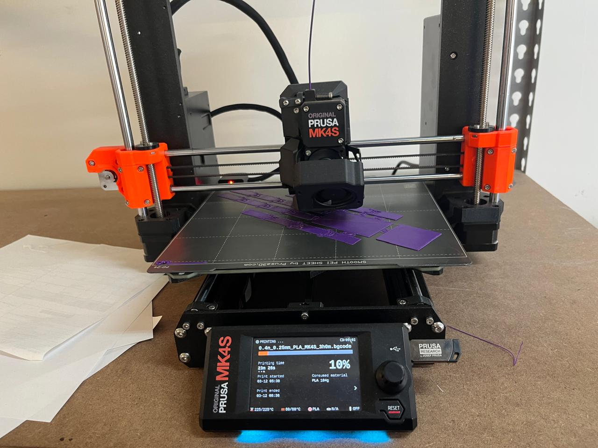
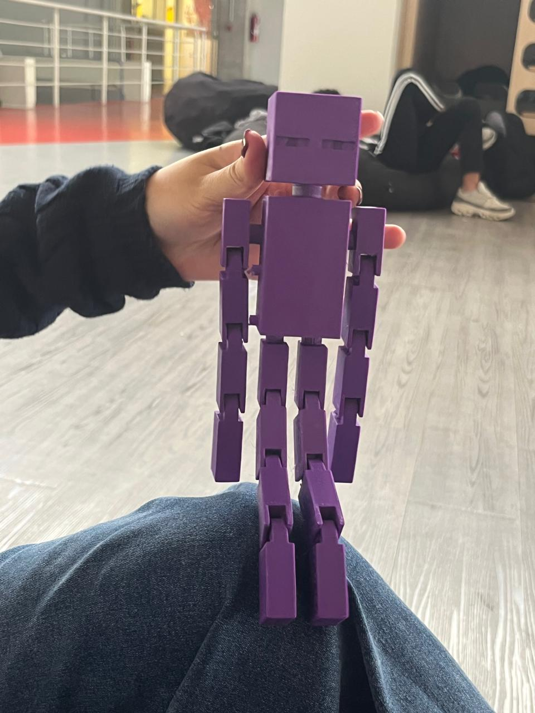

Manufactura Aditiva e Impresión 3D
Institución: IBERO Puebla Clase: Proyecto de Ingenieria I Fecha: 18 de Septiembre de 2026
1. Introducción a las Tecnologías de Manufactura Aditiva
La manufactura aditiva abarca todos los procesos donde se fabrican objetos tridimensionales añadiendo material capa por capa a partir de un archivo digital CAD. A diferencia de los métodos sustractivos (como el maquinado CNC), la impresión 3D optimiza el uso de material y permite crear geometrías complejas que serían imposibles de fabricar de forma convencional. Aquí tienes el código completo en formato Markdown actualizado, incluyendo la lista extendida de las 8 tecnologías de impresión 3D y el inventario detallado de los 27 equipos del FabLab Puebla:
Clasificación de Tecnologías de Impresión 3D
- Stereolithography (SLA): Emplea un láser UV para curar y solidificar resina fotopolimérica líquida capa por capa. Destaca por su alta precisión y acabado superficial liso.
- Selective Laser Sintering (SLS): Utiliza un láser de alta potencia para fusionar pequeñas partículas de polvo termoplástico (generalmente nailon). No requiere estructuras de soporte debido a que el polvo no sinterizado actúa como sustento.
- Fused Deposition Modeling (FDM): Es la tecnología más común. Extruye un filamento termoplástico a través de una boquilla caliente, depositando el material capa por capa sobre una plataforma.
- Digital Light Processing (DLP): Similar a SLA, pero utiliza un proyector de luz digital para curar una capa completa de resina en un solo destello, aumentando significativamente la velocidad de impresión.
- Multi Jet Fusion (MJF): Aplica agentes aglutinantes y de detalle sobre un lecho de polvo termoplástico, los cuales se activan con lámparas infrarrojas para fusionar el material.
- PolyJet: Funciona de forma similar a una impresora de inyección de tinta, pulverizando fotopolímeros líquidos sobre una bandeja que se curan instantáneamente con luz UV.
- Direct Metal Laser Sintering (DMLS): Tecnología para componentes metálicos que sinteriza polvo de metal utilizando un láser de fibra.
- Electron Beam Melting (EBM): Utiliza un haz de electrones en un entorno de alto vacío para fundir polvo metálico, ideal para aplicaciones aeroespaciales y médicas.
2. Capacidad Operativa en FabLab Puebla
El laboratorio FabLab Puebla cuenta con un parque industrial de 27 impresoras 3D, enfocadas principalmente en las tecnologías FDM, SLA y MSLA/DLP.
Inventario de Equipos
- Ender 3 (14 unidades): Equipos FDM versátiles y económicos, ampliamente utilizados para prototipado rápido y pruebas conceptuales.
- Sindoh 3DWOX (5 unidades): Impresoras FDM de cabina cerrada, optimizadas para el entorno educativo debido a su estabilidad térmica y seguridad.
- Ultimaker 2+ (2 unidades): Impresoras FDM profesionales reconocidas por su fiabilidad y precisión en tolerancias dimensionales.
- Elegoo Mars 3 (1 unidad): Impresora MSLA (Resina) ideal para piezas de dimensiones reducidas que requieren alta resolución.
- Elegoo Saturn 2 (1 unidad): Impresora MSLA con volumen de impresión ampliado para lotes de producción o piezas de resina de mayor tamaño.
- Anycubic Photon Mono M5S (1 unidad): Impresora MSLA de alta velocidad con pantalla monocromática de alta definición.
- Formlabs Form 1 (1 unidad): Impresora SLA de grado profesional para prototipos de alta precisión geométrica.
- ROSTOCK MAX™ V3 (1 unidad): Impresora FDM tipo Delta, caracterizada por su alta velocidad de desplazamiento y amplio volumen cilíndrico Z.
- Stratasys (1 unidad): Equipo FDM industrial para aplicaciones avanzadas con materiales de grado de ingeniería.
3. Guía de Materiales para Impresión FDM
Criterios de Selección (Ventajas y Requerimientos de Hardware)
| Material | Ventajas Principales | Temperatura de Impresión | Requerimientos de Hardware |
|---|---|---|---|
| PLA | Fácil de imprimir, baja deformación térmica, biodegradable. | 190°C – 210°C | Cama fría o templada (50°C - 60°C). |
| ABS | Mayor resistencia mecánica e impacto, soporta altas temperaturas. | 220°C – 250°C | Cama caliente (90°C - 100°C) y espacio cerrado (evita warping). |
| PETG | Excelente tenacidad, resistencia química y flexibilidad moderada. | 230°C – 250°C | Cama caliente (70°C - 80°C) y buena calibración de retracción. |
| TPU (Flex) | Alta elasticidad, resistencia al desgaste y absorción de impactos. | 210°C – 230°C | Extrusor de tracción directa (direct drive) recomendado. |
4. Reglas de Diseño para Manufactura Aditiva (DfAM)
Para asegurar el éxito en la impresión de piezas funcionales, se deben seguir principios específicos de diseño: 1. Ángulo de Voladizo (Overhangs): Evitar ángulos mayores a \(45^{\circ}\) respecto a la vertical sin el uso previo de estructuras de soporte. 2. Tolerancias de Ensamble (Clearance): Dejar un espacio libre de al menos \(0.2\text{ mm}\) a \(0.3\text{ mm}\) entre piezas móviles o acopladas para evitar que se fusionen durante la extrusión. 3. Orientación de la Pieza: Colocar la pieza en la plataforma de modo que las fuerzas mecánicas principales actúen a lo largo de las capas, no entre ellas (aprovechando la máxima resistencia del filamento).
5. Caso de Estudio: Mecanismo Print-in-Place en SolidWorks
Análisis Técnico del Diseño
Los mecanismos Print-in-Place (impresos en su lugar) permiten fabricar ensambles completos con partes móviles (como bisagras, engranajes planetarios o articulaciones) en una sola operación de impresión, eliminando la necesidad de armar componentes posteriores.
- Espacios Libres: Se diseñaron holguras precisas en los ejes de giro para permitir el libre movimiento una vez que el plástico se enfría y contrae ligeramente.
- Soportes Internos: Se configuró el laminador (slicer) para generar soportes fáciles de retirar sin bloquear las holguras mecánicas del mecanismo.
6. Bitácora de Fallas y Diagnósticos
| Proceso | Inconveniente Detectado | Motivo Raíz | Acción Correctiva Aplicada |
|---|---|---|---|
| Impresión en ABS | Las esquinas de la pieza se levantaron y desprendieron de la cama (warping). | Enfriamiento rápido debido a corrientes de aire frío externas en el laboratorio. | Cerrar la puerta de la cabina de la Sindoh/Stratasys, aplicar adhesivo y subir la temperatura de la cama. |
| Impresión en TPU | El filamento se atascó y dobló dentro del extrusor tipo Bowden. | Velocidad de impresión demasiado alta y flexibilidad excesiva del material en el tubo guía. | Reducir drásticamente la velocidad de impresión y ajustar la tensión del extrusor. |
| Ensambles móviles | Las piezas móviles de un mecanismo impreso quedaron completamente soldadas. | Distancia de holgura (clearance) insuficiente entre los cuerpos sólidos en el diseño CAD. | Incrementar la separación dimensional a \(0.3\text{ mm}\) en las tolerancias de contacto dentro de SolidWorks. |
7. Aprendizajes del Taller
Esta sesión permitió comprender a detalle las ventajas operativas y las limitantes físicas de la manufactura aditiva. Aprendimos a seleccionar el polímero idóneo en función de los esfuerzos mecánicos requeridos, a dominar los parámetros críticos del laminado (slicer) y a diseñar bajo los lineamientos de DfAM (Diseño para Manufactura Aditiva), logrando fabricar geometrías funcionales y mecanismos articulados con gran precisión en los equipos del FabLab Puebla.
8. Anexos y Evidencia Fotográfica
A continuación se muestran los registros gráficos recopilados durante la práctica de impresión 3D en las instalaciones del FabLab Puebla de la Ibero Puebla.
8.1. Configuración de Parámetros en el Software de Laminado (Slicer)

Figura 1: Vista previa del proceso de laminado (slicing), mostrando las trayectorias de relleno, paredes y estructuras de soporte.

Figura 1: Vista previa del proceso de laminado (slicing), mostrando las trayectorias de relleno, paredes y estructuras de soporte.
8.2. Proceso de Impresión FDM en Operación

Figura 2: Deposición de la primera capa de material termoplástico sobre la superficie de impresión nivelada.8.3. Mecanismo Print-in-Place Finalizado

Figura 3: Resultado del mecanismo articulado fabricado en una sola pieza, comprobando la movilidad y el espacio libre entre eslabones.
```